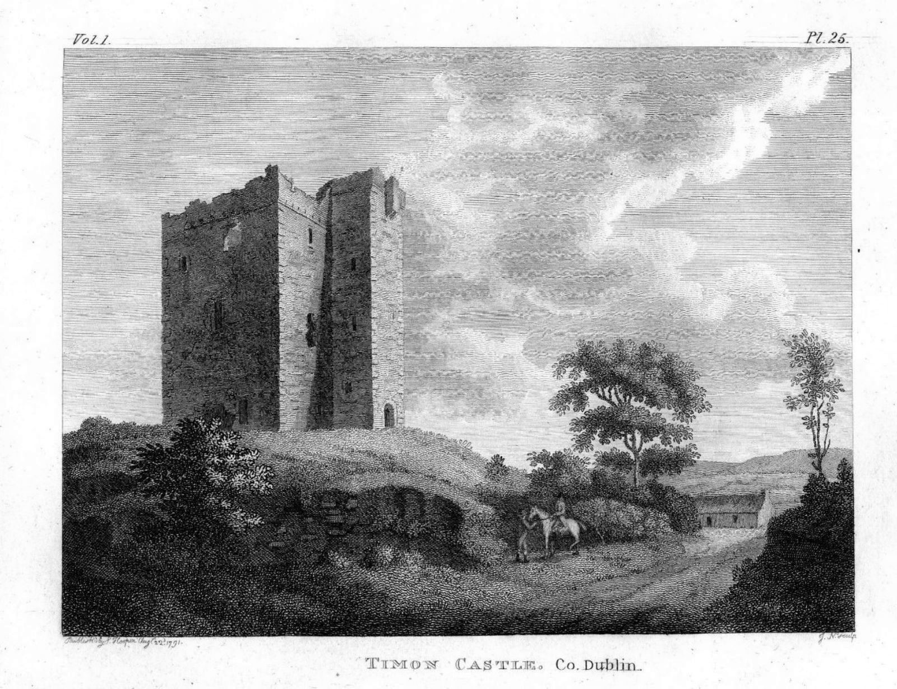
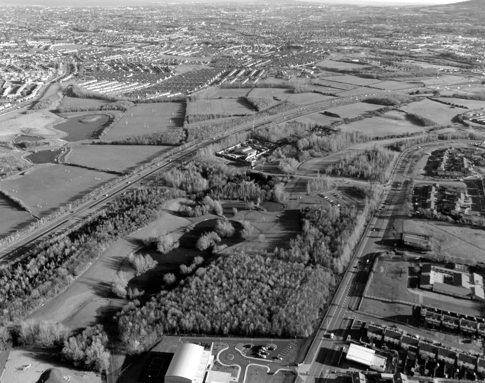
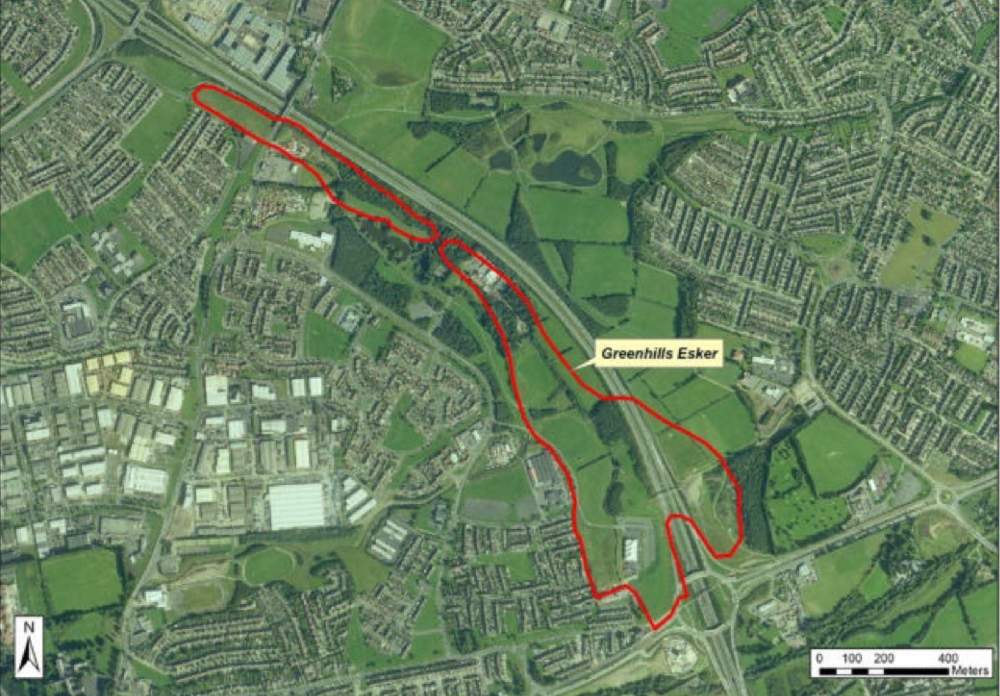
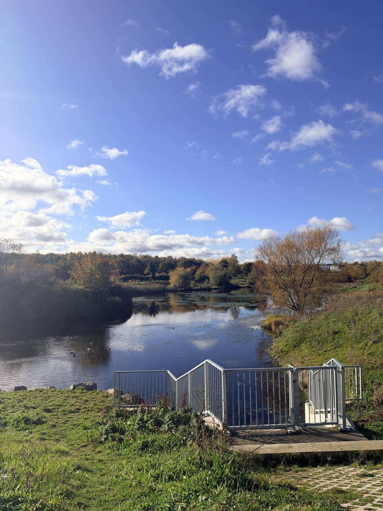

Stop 3 of 18 · Tymon Park
Tymon
A ruined castle, a glacial esker and the park built around them.
Tymon Castle
The castle is thought to have been built in either the 12th or the 15th century, as a defensive outpost against Irish clans raiding the Pale.
By 1547 it was recorded as ruinous, and it seems to have stayed that way, uninhabited for most of its life.
During the 1798 rebellion, the body of a rebel was left at the castle by his comrades after they were attacked by soldiers near Oldbawn. British soldiers then hung it from the doorway and left it there.
The Poddle flowed through the marshy ground below, with the castle on the higher ground of the esker.
Tymon estate
In 1216 King John granted the manor of Timothan to Henry de Loundres (Henry of London), Archbishop of Dublin, and his successors, said to be in recompense for his losses in fortifying Dublin Castle. Ownership later passed through many hands, including William Conolly (1662–1729), Speaker of the Irish House of Commons.
The lands later had a complex mix of owners and uses, including quarrying and farming. The state acquired them in the 1970s and opened them as a public park in 1980.
Holding back the flood
Tymon Park now does a new job for the river. Under the River Poddle Flood Alleviation Scheme, the eastern end of the lake embankment has been raised and the old weir replaced by a flow-control structure. In a big storm, the lake at Limekiln can now rise by up to three metres, holding water back until the peak has passed downstream. The impoundment came into use on 20 February 2025, the first part of the scheme to be finished.
Tymon and Greenhills Esker
Tymon Esker, along which Tymon Lane now runs, is a rare and important feature of the park. An esker is a long ridge of sand and gravel laid down by a stream flowing under a glacier, in this case during the last Ice Age, more than 10,000 years ago.
Tymon Lane, along the ridge, was an important link between Tallaght and the townlands of Dublin, and Tymon Castle was built beside it.
Greenhills
Greenhills was mostly farmland until the 1950s and 1960s, when the housing estates were built. The Greenhills Road runs from Tallaght village to the Walkinstown Roundabout, and the Poddle passes under it near St Mary’s Priory before it enters Tymon Park. The wider Greenhills area takes in part of Tymon and runs east as far as Templeville Road.
Building the park
The lands for Tymon Park were bought by compulsory purchase in the 1970s. They had been farmed, some by the same families for a hundred years or more. The park covers about 130 hectares between Tallaght, Templeogue and Walkinstown and opened to the public in June 1986. The M50 later split it in two, and footbridges near the Greenhills Road and the Tallaght–Templeogue road join the halves.
In the western park the Poddle first follows its old line beside Tymon Lane, then turns into a new course of ponds, cascades and waterfalls made in the 1980s. The western lakes were dug in 1985, one of them in an old quarry. About 50,000 cubic metres of soil were moved to shape the banks and viewing mounds. Four ponds are linked by sluices, cascades and underground channels, and a dense clay called marl in the ground holds the water without a liner. Within two years mallard were nesting.
In 1997 three more lakes, covering 2.2 hectares, were dug in the eastern park near Limekiln Road. They were paid for partly by the developer of new housing at Kimmage Manor, which was required to reduce the flood risk downstream, and they were built to hold at least 13,000 cubic metres of flood water. Four football pitches went, more than 100,000 cubic metres of earth were moved, and islands were left in the lakes for water birds.
Source: South Dublin County Council, a book on the facilities and history of Tymon Park (2001), South Dublin Libraries hdl.handle.net/10599/8965.
What the castle looked like
Tymon Castle was a two-storey tower on the ridge beside Tymon Lane, with a vaulted ceiling, a flat roof, a projecting stair turret and machicolations, the overhanging parapets from which defenders could drop missiles on attackers. It was described as ruinous by 1547. In the 1770s it was partly repaired and briefly lived in by a poor family, and for generations it was a place for picnics. By the 20th century it was a dangerous ruin, and it was knocked down in 1960. Local tradition says the castle was built to guard the river’s source.
Watch and read
From the planning file
Facts from the flood scheme’s planning application and four local planning files.
People
- Archbishops Comyn and de Loundres: Built on the river’s island
Parts of this page draw on research by the volunteers of the Crumlin and Walkinstown History Group, shared with poddle.ie. About their research.



